🎯 Цели занятия
- Понять, что такое скрипт и зачем он нужен в игре
- Изучить виды скриптов: Script (серверный), LocalScript (клиентский), ModuleScript
- Научиться создавать скрипты в разных контейнерах
- Познакомиться с основными свойствами объектов (Part)
- Написать свой первый скрипт, который управляет свойствами Part
| Этап занятия | Время | Что делаем |
|---|---|---|
| Теория: скрипты и их виды | 10 мин | Игровая аналогия с пультом управления |
| Теория: свойства объектов | 10 мин | Таблица "волшебных кнопок" |
| Практика: создание скрипта | 10 мин | Пошаговая инструкция с Бобиком |
| Задание 1 — Настройка Part | 10 мин | Меняем размер, позицию, якорь |
| Задание 2 — Цвет и материал | 10 мин | Превращаем куб в деревянный ящик |
| Задание 3 — Интерактивная кнопка | 10 мин | ClickDetector + скрипт |
| Задание 4 — Творческое | 10 мин | Создай свою уникальную Part |
| Задание 5 — Мини-светофор | 10 мин | Три цветных сигнала по очереди |
| Задание 6 — Телепорт по клику | 10 мин | Перемещаем игрока нажатием кнопки |
| Задание 7 — Счётчик нажатий | 10 мин | Ведём подсчёт кликов и меняем цвет |
| Опрос и итоги | 5 мин | Викторина «Что я узнал?» |
| Итого | 95 мин | — |
0 Теория: что такое скрипт?
📜 Представь себе пульт управления
Скрипт — это как пульт от телевизора. Сам телевизор (объект) умеет показывать картинку, но без пульта ты не можешь переключить канал или изменить громкость. Скрипт даёт объекту команды: «стань больше», «поменяй цвет», «двигайся».
Скрипты пишутся на языке Lua (читается «Лу́а»). Этот язык очень простой, и сегодня ты напишешь свой первый код!
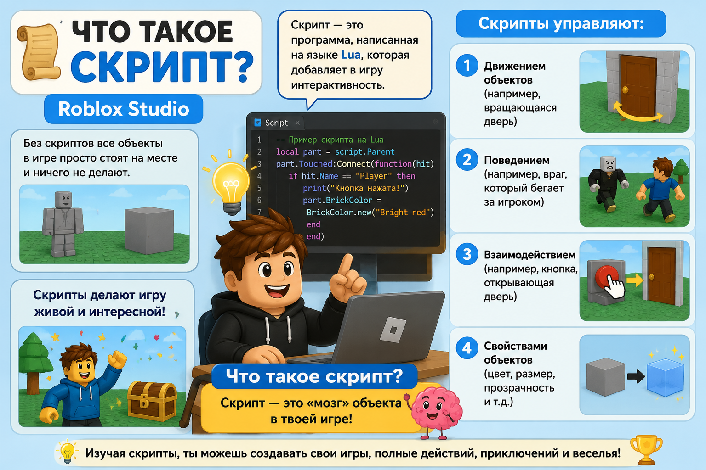
📂 Три вида скриптов — как разные пульты
В Roblox Studio есть три типа скриптов. Они похожи на пульты от разных устройств:
| Тип скрипта | Для чего нужен | Где «живёт» |
|---|---|---|
| Script (серверный) | Управляет всей игрой: врагами, дверями, правилами. Работает на сервере Roblox. | ServerScriptService, Workspace |
| LocalScript (клиентский) | Управляет тем, что видит только один игрок: интерфейс, камера, звуки. | StarterPlayerScripts, StarterGui |
| ModuleScript (модульный) | Библиотека готовых команд, которую можно использовать в других скриптах. | Любой контейнер |
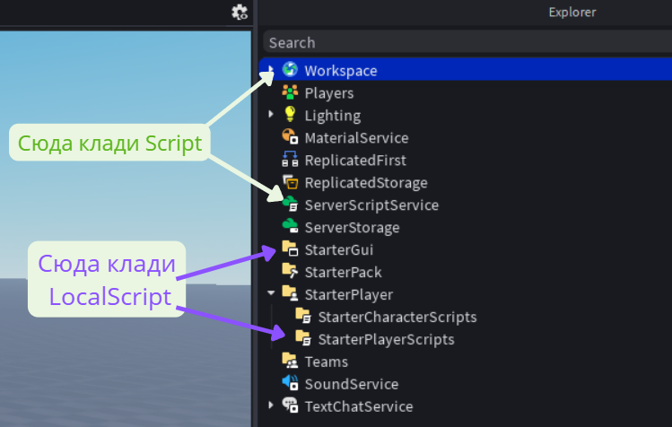
🔧 Свойства объектов — как кнопки на пульте
У каждого объекта в Roblox (например, Part) есть свойства — это как кнопки на пульте: «сделай громче» (размер), «переключи канал» (цвет), «включи/выключи» (прозрачность).
Вот самые главные кнопки для Part:
| Свойство (кнопка) | Что делает | Пример команды в скрипте |
|---|---|---|
| Size | Размер (ширина, высота, глубина) | part.Size = Vector3.new(5,3,5) |
| Position | Позиция в мире | part.Position = Vector3.new(0,5,0) |
| Anchored | Закрепить на месте (true/false) | part.Anchored = true |
| Transparency | Прозрачность (0 — видимый, 1 — невидимый) | part.Transparency = 0.5 |
| BrickColor | Цвет из палитры Roblox | part.BrickColor = BrickColor.new("Bright red") |
| Material | Материал (дерево, металл, стекло…) | part.Material = Enum.Material.Wood |
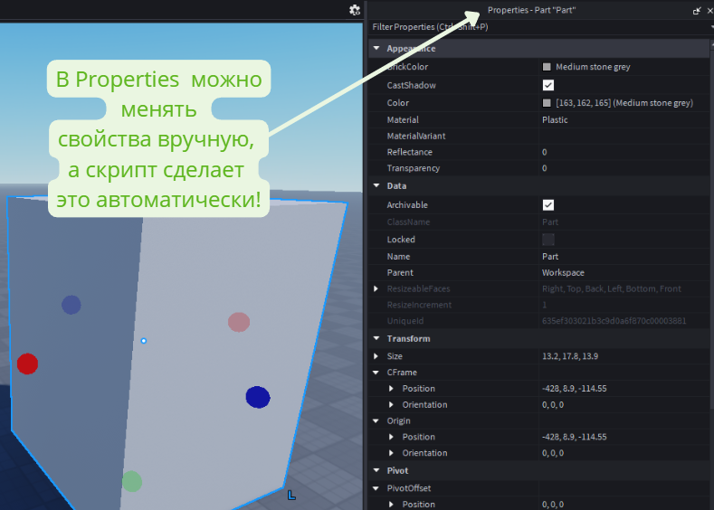
script.Parent. Это как сказать: «Тот, кто меня держит».
0 Как работает скрипт в игре?
Представь, что ты нажимаешь на кнопку — и что-то происходит. Вот как это выглядит внутри:
- Событие: игрок нажал на кнопку.
- Скрипт получает сигнал: игра замечает событие и передаёт его скрипту.
- Скрипт выполняет команды: например, меняет цвет Part или открывает дверь.
- Изменения применяются в игре: ты видишь результат!
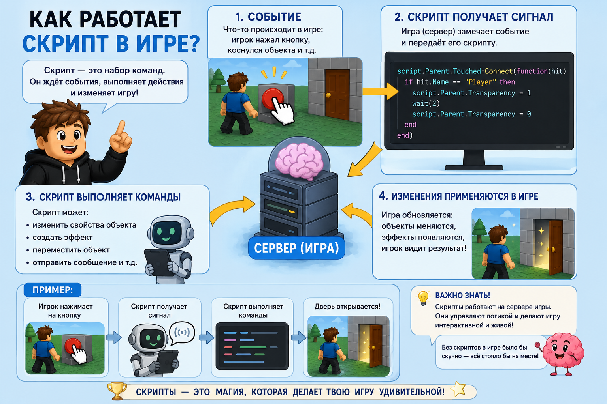
0 Без скрипта — стоит, со скриптом — действует!
Сравни: обычный куб без кода и куб, которым управляет скрипт.
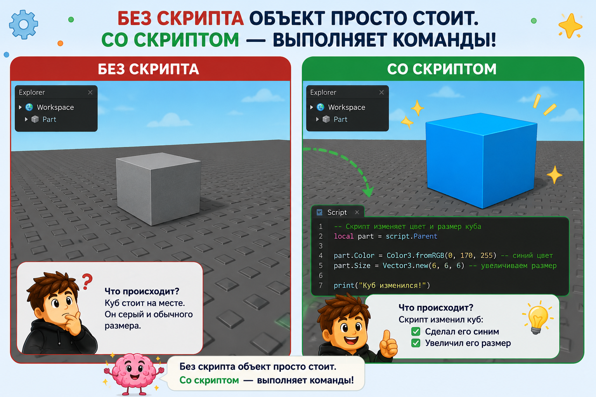
Скрипт делает объекты живыми — они могут двигаться, меняться и взаимодействовать с игроком.
📘 Шпаргалка юного скриптера
Основные правила и команды, которые пригодятся в каждом скрипте:
local part = script.Parent — ссылка на объект, в котором лежит скрипт.local part = workspace:WaitForChild("Имя") — поиск Part по имени.part.Size = Vector3.new(5, 3, 5)part.Position = Vector3.new(0, 5, 0)part.Anchored = true (закрепить)part.Transparency = 0.5 (0 — видимый, 1 — невидимый)part.BrickColor = BrickColor.new("Bright red")part.Material = Enum.Material.Woodpart.Touched:Connect(function(hit) ... end) — при касании.click.MouseClick:Connect(function() ... end) — при клике (нужен ClickDetector).wait(2) — пауза 2 секунды.print("Привет!") — вывод в окно Output.if part.BrickColor == BrickColor.Red() thenfor i = 1, 5 do ... end — повтор 5 раз.while true do ... end — бесконечный цикл (осторожно!).BrickColor.Random() — случайный цвет.Instance.new("Part") — создать новую Part.part.Parent = workspace — поместить объект в мир.local перед переменной.--if part thenend⭐ Сохрани эту шпаргалку — она пригодится во всех следующих занятиях!
0 Как создать скрипт — пошаговая инструкция с Бобиком
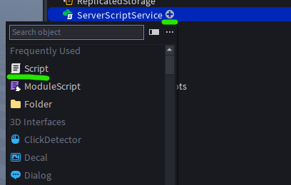
print("Hello world!").
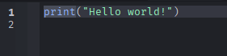
part.Size = Vector3.new(10, 5, 10)
part.BrickColor = BrickColor.new("Really red")
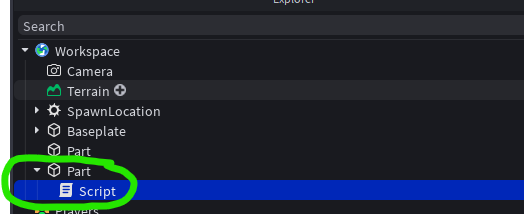
print(), открой Output (меню Script → Output).
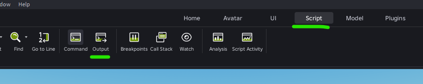
Нажми на вопрос — Алиса ответит тебе прямо сейчас!
📦 Задание 1 — Настраиваем Part (пульт в действии)
Создай скрипт, который установит для Part параметры:
- Размер: 5, 3, 5
- Позиция: 0, 10, 0
- Якорь (Anchored): true
- Прозрачность: 0.3
-
Готовый скрипт:
local part = script.Parent
part.Size = Vector3.new(5, 3, 5)
part.Position = Vector3.new(part.Position.X, 10, part.Position.Z)
part.Anchored = true
part.Transparency = 0.3
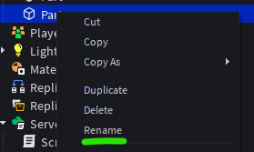
🎨 Задание 2 — Превращаем куб в деревянный ящик
Создай ещё один Part со скриптом, который задаст:
- Размер: 4, 2, 4
- Цвет: Nougat
- Материал: Wood
-
Готовый скрипт:
local part = script.Parent
part.Size = Vector3.new(4, 2, 4)
part.BrickColor = BrickColor.new("Nougat")
part.Material = Enum.Material.Wood
🔘 Задание 3 — Волшебная кнопка (ClickDetector)
Создай кнопку, которая при нажатии меняет цвет на случайный.
-
Готовый скрипт:
local part = script.Parent
local click = part:FindFirstChild("ClickDetector")
function onClick()
part.BrickColor = BrickColor.Random()
print("Кнопка нажата!")
end
click.MouseClick:Connect(onClick)
🌟 Задание 4 — Твой уникальный объект (свободное творчество)
Придумай свою собственную Part и настрой её через скрипт. Используй минимум 5 разных свойств из таблицы выше.
Примеры идей:
- Тонкая пластина 0.5, 10, 0.5 цвета «Teal» и материал Glass (стекло).
- Огромный золотой шар (Material = Metal, BrickColor = “Gold”).
- Невидимый куб (Transparency = 1), который стоит на голове персонажа.
Добавь ClickDetector и придумай, что будет происходить при клике (можешь менять цвет, размер или выводить сообщение).
part.Shape = Enum.PartType.Ball и преврати куб в шар!
🚦 Задание 5 — Мини-светофор
Создай три Part (красный, жёлтый, зелёный) и скрипт, который по очереди «зажигает» их, имитируя светофор.
Алгоритм:
- Создай три Part, назови их RedLight, YellowLight, GreenLight. Раскрась соответственно.
- В одном общем Script (например, в ServerScriptService) напиши код, который бесконечно переключает цвета.
- Используй
wait(секунды)для пауз.
-
Пример скрипта:
-- Получаем части по имени из Workspace
local red = workspace:WaitForChild("RedLight")
local yellow = workspace:WaitForChild("YellowLight")
local green = workspace:WaitForChild("GreenLight")
while true do
red.BrickColor = BrickColor.Red()
yellow.BrickColor = BrickColor.Gray()
green.BrickColor = BrickColor.Gray()
wait(3)
red.BrickColor = BrickColor.Gray()
yellow.BrickColor = BrickColor.Yellow()
wait(1)
red.BrickColor = BrickColor.Gray()
yellow.BrickColor = BrickColor.Gray()
green.BrickColor = BrickColor.Green()
wait(3)
endНе забудь, что все три Part должны быть Anchored = true!
🌀 Задание 6 — Телепортация по клику
Создай кнопку, которая при нажатии перемещает твоего персонажа в другую точку!
- Создай две Part: одна будет кнопкой (назовём TeleportButton), вторая — точкой назначения (Destination).
- В TeleportButton добавь ClickDetector.
- Напиши скрипт, который при клике берёт персонажа игрока и перемещает его на позицию Destination.
- Подсказка: используй
player.CharacterиCFrame.
-
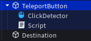
Готовый скрипт (в TeleportButton):
local button = script.Parent
local click = button:FindFirstChild("ClickDetector")
local destination = workspace:WaitForChild("Destination")
function onClick(player)
local character = player.Character
if character then
character:MoveTo(destination.Position)
end
end
click.MouseClick:Connect(onClick)Убедись, что обе Part закреплены (Anchored = true).
🔢 Задание 7 — Счётчик нажатий
Создай кнопку, которая считает, сколько раз на неё нажали, и меняет цвет при каждом клике.
- Создай Part и назови его CounterButton.
- Добавь ClickDetector и Script.
- В скрипте заведи переменную-счётчик (
local count = 0). - При каждом клике увеличивай счётчик на 1, выводи его в Output и меняй цвет Part.
-
Готовый скрипт:
local part = script.Parent
local click = part:FindFirstChild("ClickDetector")
local count = 0
function onClick()
count = count + 1
print("Кликов: " .. count)
part.BrickColor = BrickColor.Random()
end
click.MouseClick:Connect(onClick)
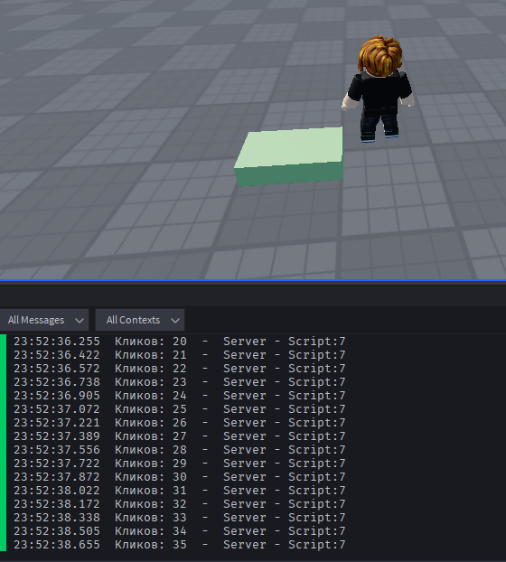
🧩 Быстрая проверка: выбери правильные карточки
1. Какой скрипт работает на сервере?
2. Куда обычно кладут серверные скрипты?
3. Какая команда делает Part прозрачным наполовину?
4. Что означает script.Parent?
5. Как включить якорь у Part?
📝 Итоговый тест «Что я узнал?»
1. На каком языке пишут скрипты в Roblox?
2. Какой скрипт нужен для создания интерфейса, который видит только один игрок?
3. Как правильно изменить размер Part на (10,5,10)?
4. Какое свойство меняет материал Part?
5. Что делает команда print("Привет!")?
6. Что такое ClickDetector?
💭 Твой опыт
Оцени, как прошло занятие: